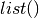

Migration guide from 1.X to 2.0¶
This is a guide for people moving from NetworkX 1.X to NetworkX 2.0
Any issues with these can be discussed on the [mailing list](https://groups.google.com/forum/#!forum/networkx-discuss)
As you know we have made some major changes to the methods in the Multi/Di/Graph classes.
Methods that used to return containers now return iterators and methods that returned iterators have been removed.
For example, G.nodes() now returns an iterator and G.nodes_iter() has been removed.
The methods changed are explained with examples below.
>>> import networkx as nx
>>> G = nx.complete_graph(5)
>>> G.nodes()
<dictionary-keyiterator at 0x102ae8730>
People suprised by this output and expecting something like this
>>> G.nodes()
[0, 1, 2, 3, 4]
don’t panic. Nothing is wrong.
Now G.nodes() returns an iterator. If you want a list of nodes send the iterator to the Python list function
>>> list(G.nodes())
[0, 1, 2, 3, 4]
In the same way for G.edges()
>>> G.edges()
<generator object edges at 0x102ae9fa0>
>>> list(G.edges())
[(0, 1),
(0, 2),
(0, 3),
(0, 4),
(1, 2),
(1, 3),
(1, 4),
(2, 3),
(2, 4),
(3, 4)]
and G.neighbors(n) where n is a node.
>>> G.neighbors(2)
<dictionary-keyiterator at 0x102ae8aa0>
>>> list(G.neighbors(2))
[0, 1, 3, 4]
So, basically you can switch back to the old behavior by adding  to the method.
For methods that used to return a dict, like G.degree(), the new iterator version
returns a (key,value) 2-tuple so that passing it to Python’s dict function recovers
the original behavior if desired.
Note that passing a single node to the degree method still returns the degree of that node as it always has.
>>> G.degree(2)
4
>>> G.degree([1,2,3])
<generator object d_iter at 0x102ba8780>
>>> list(G.degree([1,2,3]))
[(1, 4), (2, 4), (3, 4)]
>>> dict(G.degree([1,2,3]))
{1: 4, 2: 4, 3: 4}
>>> G.degree()
<generator object d_iter at 0x102ba8af0>
>>> list(G.degree())
[(0, 4), (1, 4), (2, 4), (3, 4), (4, 4)]
>>> dict(G.degree())
{0: 4, 1: 4, 2: 4, 3: 4, 4: 4}
G.degree() used to return a dictionary. We can typecast the generator to return a list or dict as shown in the
above example.
Now lets move to DiGraphs. Everything is similar to Graphs. But we have a few more methods for DiGraphs. Let’s have a look on them.
>>> D = nx.DiGraph()
>>> D.add_edges_from([(1, 2), (2, 3), (1, 3), (2, 4)])
>>> D.nodes()
<dictionary-keyiterator at 0x102bd68e8>
>>> list(D.nodes())
[1, 2, 3, 4]
>>> D.edges()
<generator object edges at 0x102ba88c0>
>>> list(D.edges())
[(1, 2), (1, 3), (2, 3), (2, 4)]
>>> D.in_degree(2)
1
>>> D.out_degree(2)
2
>>> D.in_edges()
<generator object in_edges at 0x102ba8cd0>
>>> list(D.in_edges())
[(1, 2), (1, 3), (2, 3), (2, 4)]
>>> D.out_edges(2)
<generator object edges at 0x102ba8c80>
>>> list(D.out_edges(2))
(2, 3), (2, 4)]
>>> D.in_degree()
<generator object d_iter at 0x102ba8a00>
>>> list(D.in_degree())
[(1, 0), (2, 1), (3, 2), (4, 1)]
>>> D.successors(2)
<dictionary-keyiterator at 0x102bdb418>
>>> list(D.successors(2))
[3, 4]
>>> D.predecessors(2)
<dictionary-keyiterator at 0x102bdb730>
>>> list(D.predecessors(2))
[1]
The same changes apply to MultiGraphs and MultiDiGraphs.